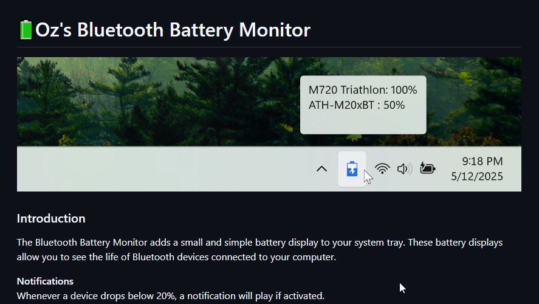
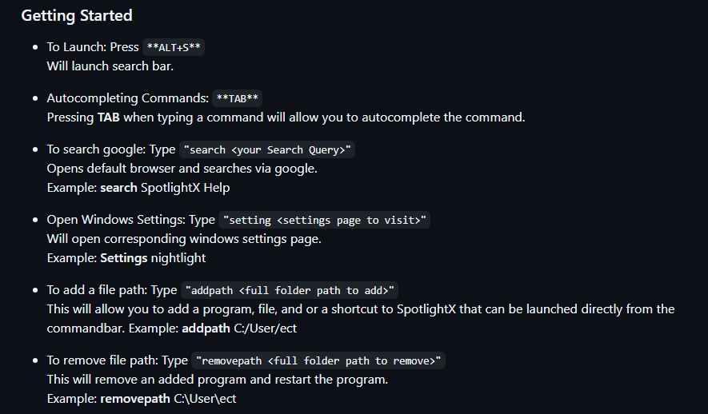
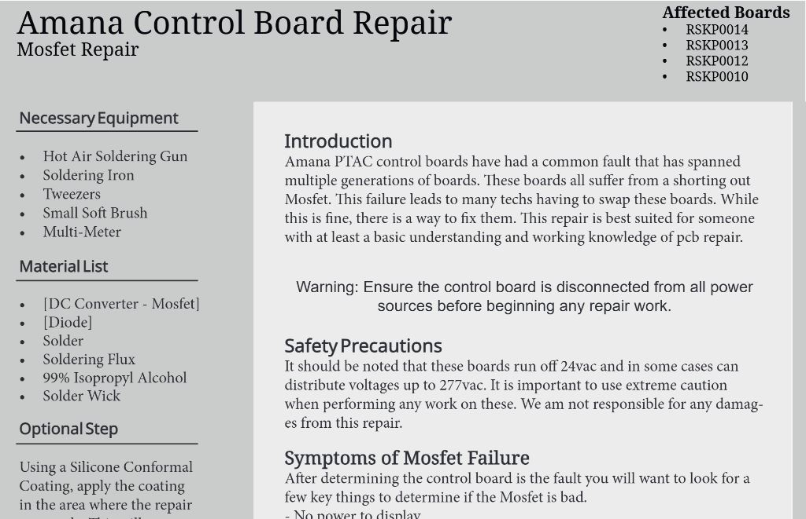

Welcome To My Portfolio Page!
Hi! My name is Joshua Owens. I'm an experienced HVAC/R Technician based in the Florida Panhandle,
specializing in commercial system diagnostics, repair, and maintenance. Below,
you'll find a detailed look at my work history and technical skills. I am dedicated to providing
high-quality service and effective solutions for any HVAC/R challenge.
Work Experience
HVAC/R Technician
Advanced Mechanical Services, LLC. | Pensacola, FL
Jul 2024 - Present
- Provided service to a multitude of commercial national account clients.
- Worked with BMS systems such as E2 and Site Supervisor Controllers
- Worked with the new A2L refrigerants
HVAC/R Technician
CEFCO Convenience Stores | Pensacola, FL
Dec 2023 - Jul 2024
- Maintained a variety of equipment across 30+ stores.
- Performed repairs on ice machines, soda machines, & walk-in's
HVAC/R Maintenance
The Island Resort at Fort Walton Beach | Okaloosa County, FL
Aug 2021 - Dec 2023
- Managed and performed major repairs on Carrier and Trane rooftop units.
- Rebuilt custom wiring harnesses for ice machines.
- Diagnosed issues with Munters dehumidifier and Pelican Wireless BMS.
- Supervised a small team of maintenance technicians.
Commercial HVAC/R & Kitchen Equipment Technician
Pro-Tech Mechanical Services | Destin, FL
Jul 2023 - Oct 2023
- Serviced HVAC, refrigeration, and hot-side kitchen equipment.
- Worked with refrigerants including R134a, R410a, and R290.
- Repaired commercial kitchen appliances.
Commercial HVAC/R & Kitchen Equipment Technician
Bay Climate Control and Refrigeration | Destin, FL
Aug 2022 - Jul 2023
- Supervised a major commercial installation of over 30 units.
- Trained and mentored several new technicians.
- Performed diagnostics, repairs, and maintenance on various systems.
Residential & Light Commercial HVAC Technician
4 Seasons Heating & Air | Fort Walton Beach, FL
Jun 2022 - Aug 2022
- Conducted inspections of residential A/C units.
- Replaced fan motors, control boards, and diagnosed faults.
- Advised customers on preventative maintenance.
Skills
HVAC Systems
- Diagnostic & Repair Of RTU/Minisplits/Split-Systems
- Installation & Maintenance
- Understanding Dehumidifications Issues
- Diagnosing Building Management Systems
Refrigeration
- Diagnosing & Repairing Walk-in & Reach-In Coolers/Freezers
- Ice Machines Repair
- Wall Coolers & Freezers Repair
Kitchen Equipment
- Diagnostics & Repair Of Hotside Equipment
- Convection Ovens, Commercial Microwaves, Pizza Ovens, Grills, Fryers
- Ability To Repair Both Gas & Electric Equipment
Technical Skills
- Advanced Electrical Troubleshooting High & Low Voltage
- Reading & Drawing Electrical Schematics
- Ability To Learn New Skills Fast & Adapt
Professional Skills
- Ability To Stay Organized
- Keeping A Professional Environment
- Capability To Speak Directly To Customers Professionally
Technical
- In-Depth Understanding Of Computers
- Ability To Flash Firmware
- Understanding Of Basic TCP & BacNet Protocols
- Experience With Linux Based OS's
- Able To Use AI As A Tool
- Component Level Circuit Board Diagnostic & Repair
- Using CAD and 3d Printing To Build Parts
Licenses & Certifications
Refrigerant Handling (EPA 608) Universal
- Refrigerant Handling
- Universal License
IS-100 : Introduction to Incident Command Systems
- Incident Command
- Incident Management
Amateur General Class Operator
- Amateur Radio
- General Packet Radio Service (GPRS)
Remote Pilot Certification
- Drone Piloting
- Flight Safety
- Commercial Drone Piloting
OSHA 10-Hour
- Construction Safety
- Workplace Safety
ESCO Institue Certifications
- Air Conditioning
- Electric Heat
- Heat Pumps
GitHub Technical Writing Projects

Here you will find some sample writing where I updated the documentation for this project. I tested the program and then created the documentation around that.

I spent some time on this neglected project in an attempt to bring it back to life. After testing the program I was able to update the existing documentation for the project.

When working for a hotel we found that the control board in the HVAC Ptac units would go out very often. I took it upon myself to learn basic circuit board repair
and after some time I was able to diagnose, source parts, and reliably repair the boards. When I left I built this repair manual and posted it to the internet for others to use.